Inside the Camera ECU
AUTOSAR Classic & Adaptive, services, customer Conan deliveries, Qualcomm + QNX, early boot, calibration files, UDS diagnostics and CANoe, explained for the people who build, integrate and sell automotive computer-vision software.
0Overview
A modern camera ECU is a small data centre on wheels: a powerful Qualcomm system-on-chip running QNX and AUTOSAR Adaptive, a small safety microcontroller running AUTOSAR Classic, a diagnostic interface that a workshop tester in any country must be able to talk to, and a boot sequence that has to show a reversing image before the driver has finished looking over their shoulder. This chapter walks through each of those pieces in the order the data actually flows, and keeps asking two questions: why does this exist and what really happens inside.
The sections follow the data: the ECU as a whole, AUTOSAR Classic and Adaptive, services and SOME/IP, how platform software is delivered as Conan packages, the Qualcomm and QNX platform, early boot and the early camera, calibration files, UDS diagnostics and DTCs, and the CANoe bench. Three end-to-end stories then tie the pieces together.
1The big picture: anatomy of a camera ECU
Before diving into acronyms, it helps to see the whole machine. A camera ECU takes video from several cameras around the car, understands the scene, shows images to the driver and talks to the rest of the vehicle. Almost every topic in this chapter — AUTOSAR, SOME/IP, QNX, diagnostics, calibration — is a tool for doing one part of that job reliably.
1.1What the ECU actually does
A typical parking / surround-view ECU receives four to six (sometimes up to twelve) camera streams: a front camera, a rear camera and two cameras in the side mirrors, each with a fisheye lens of roughly 190° field of view. From these it produces several products at the same time. It shows a rear view with guidelines when reverse is engaged. It stitches the four images into a bird's-eye (surround) view of the car from above. It runs perception: free-space estimation, object and pedestrian detection, parking-slot detection, sometimes a BEV (bird's-eye-view) neural network that fuses cameras directly. And it publishes the results to other ECUs — the parking controller, the HMI, the ADAS fusion ECU.
To do this it needs vehicle information it does not produce itself: gear position, vehicle speed, steering angle, ignition state, door and mirror states (a folded mirror moves the camera!). It also has to be diagnosable — a tester in a workshop must be able to read its software version, read fault codes, start a calibration — and updatable over the air or by flashing.
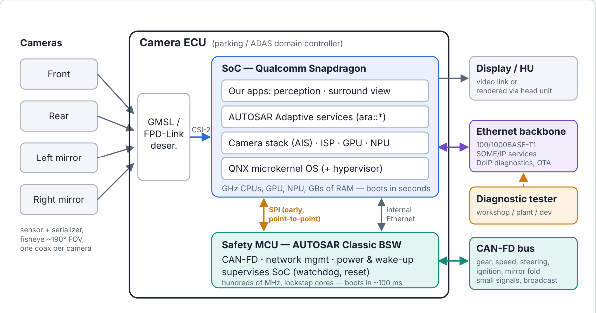
1.2Why two computers in one box?
The SoC is enormously powerful, but it pays for that power with complexity: a multi-stage secure boot, gigabytes of RAM to initialise, a full operating system with dozens of processes, and a boot time measured in seconds. A microcontroller is the opposite — a few megabytes of flash, a few hundred MHz, but it starts executing code within milliseconds, has lockstep cores for ASIL-D safety, and is built to sit on a CAN bus 24/7 while drawing microamps in sleep.
So the work is split by nature. The MCU is the always-on gatekeeper: it wakes up when the bus wakes up, participates in network management, decides when the SoC gets power, receives vehicle signals immediately and watches the SoC with a watchdog — if the SoC hangs, the MCU resets it. The SoC is the heavy thinker: it runs the camera pipeline, the neural networks, the rendering and the service-oriented software. The link between them — usually an SPI connection that is available very early in boot, plus an internal Ethernet link — is one of the most important interfaces in the whole ECU (Chapter 8).
Vision needs teraflops; vehicle integration needs millisecond start-up, deterministic CAN behaviour and the highest safety integrity. No single chip is best at both at an acceptable cost, so the architecture combines a "fast-booting, always-correct" controller with a "slow-booting, extremely capable" processor.
1.3The four kinds of wires
It is worth remembering the four communication worlds, because each has its own tools, its own failure modes and its own team:
| Link | What travels on it | Why this technology |
|---|---|---|
| Serial video link (GMSL, FPD-Link) | Raw camera pixels at several Gbit/s over one coax cable, plus power (Power-over-Coax) and a back-channel used to configure the camera over I²C. | Only a dedicated SerDes link can carry uncompressed, low-latency video over several metres of cable in a car. The camera has no software stack worth mentioning — it is configured remotely through the back-channel. |
| CAN / CAN-FD | Small signals (gear, speed, steering angle) in frames of up to 8 / 64 bytes, broadcast to everyone, plus classic diagnostics. | Robust, cheap, deterministic arbitration, decades of tooling. Perfect for state signals that every ECU wants. |
| Automotive Ethernet (100/1000BASE-T1) | Service-oriented communication (SOME/IP), diagnostics over IP (DoIP), software updates, sometimes compressed video. | Bandwidth and flexibility: rich data structures, request/response, software updates in minutes instead of hours. |
| SPI (on the board) | SoC ↔ MCU messages: gear, power mode, heartbeats, shutdown requests. | Simple, needs almost no software, available within a second of power-on — long before Ethernet and SOME/IP are up. |
1.4Who delivers which piece
A camera ECU is never built by one company. Understanding the supply chain is half of understanding the technology, because every boundary below is also an interface specification, a delivery and a potential schedule risk.
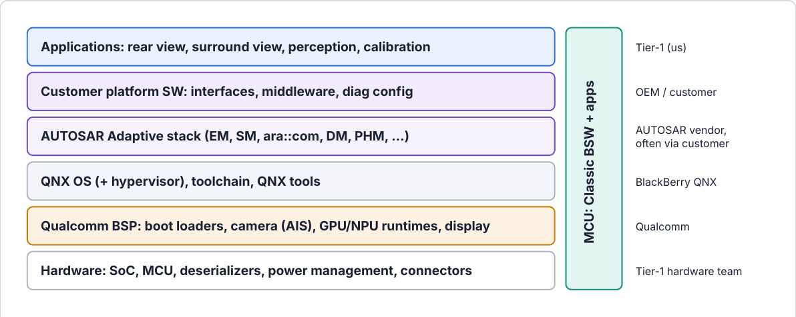
"The camera ECU is two computers in one box: a Qualcomm SoC running QNX and AUTOSAR Adaptive for the vision work, and a safety MCU running AUTOSAR Classic that owns the vehicle bus, power and supervision — connected by an early SPI link so the rear camera works before the big software stack has even started."
2AUTOSAR: why it exists
AUTOSAR is the reason software from a dozen companies can end up running together in one car. It is three things at once: a standard software architecture, a standard way of describing systems in files (ARXML), and a set of standard interfaces. Its two platforms — Classic and Adaptive — exist because a brake controller and a vision computer have very different needs.
2.1The problem before AUTOSAR
Around 2000, a premium car contained 50–70 ECUs, and each one was a little island: the supplier wrote the drivers, the communication code, the diagnostics and the application, all tightly bound to one microcontroller. Moving a function to another ECU or another chip meant rewriting most of it. Every OEM specified communication differently, so each supplier rebuilt the same "plumbing" for every customer. Integration was slow and expensive, and quality depended on dozens of private implementations of the same thing.
In 2003 BMW, Bosch, Continental, DaimlerChrysler, Siemens VDO and Volkswagen founded the AUTOSAR partnership (others such as Ford, GM, PSA and Toyota joined soon after) with a famous motto: "cooperate on standards, compete on implementation." The plumbing — operating system, communication stacks, diagnostics, memory handling — would be standardised so that everyone could buy it from specialised vendors, and companies would compete on the functions that customers actually notice.
To separate application software from hardware and from the vehicle network, so that software can be reused, bought off the shelf and integrated by different companies using the same files, tools and vocabulary.
2.2ARXML: the language everyone speaks
The less visible but arguably more important part of AUTOSAR is its methodology. Everything — software components, their ports and data types, network frames and signals, ECUs, service interfaces, diagnostic events, deployment — is described in a single meta-model and stored as ARXML (AUTOSAR XML). The OEM keeps the master description of the whole vehicle network; each supplier receives an ECU extract describing only what their ECU sends and receives. Configuration tools read these files and code generators turn them into C or C++ code. When someone in a meeting says "the new ARXML drop arrived", it means the contract between your ECU and the rest of the car just changed — and generated code, tests and sometimes behaviour change with it.
2.3Two platforms, two worlds
The Classic Platform (from 2005 onwards) targets microcontrollers: everything is known and configured before compilation, nothing is allocated at runtime, and timing can be proven. That is ideal for braking, airbags or our safety MCU. But it struggles with what high-performance computers need: gigabytes of memory with process isolation, C++ applications, high-bandwidth Ethernet, communication partners that appear and disappear, and software updates of individual applications. The Adaptive Platform, first released in March 2017, was designed for exactly that: a POSIX operating system, C++ APIs, service-oriented communication and applications that are deployed and started at runtime. AUTOSAR publishes a new release of both platforms every year (R24-11, R25-11, …); Adaptive does not replace Classic — they live side by side, often in the same box, as in our ECU.
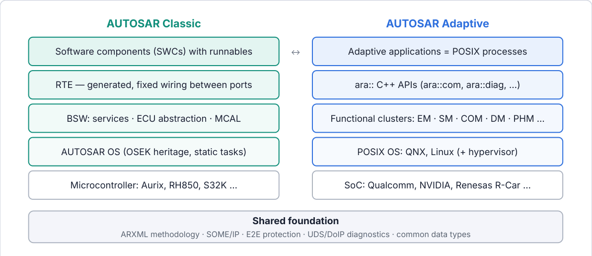
| Aspect | Classic Platform | Adaptive Platform |
|---|---|---|
| Typical hardware | MCU, MHz class, KB–MB of RAM, no MMU (MPU only) | Multi-core SoC, GHz class, GB of RAM, MMU, GPU/NPU |
| Operating system | AUTOSAR OS, part of the BSW | POSIX OS underneath (QNX, Linux); AUTOSAR sits on top |
| Language / API | C, generated RTE functions (Rte_Read_…) | C++14/17, ara:: namespaces |
| Communication | Signal-based: fixed frames, fixed cycle times | Service-oriented: methods, events, fields; partners discovered at runtime |
| When is it configured? | Everything at build time (pre-compile / link time) | Partly at deployment and runtime via manifests |
| Software update | Re-flash the whole ECU image | Update individual software clusters (UCM) |
| Strength | Hard real-time, tiny footprint, proven ASIL D | Performance, flexibility, complex applications |
| In our ECU | Safety MCU: CAN, NM, power, SoC supervision | SoC: vision applications, services, diagnostics server |
"Classic AUTOSAR is the statically configured, hard-real-time world of microcontrollers; Adaptive AUTOSAR is the service-oriented C++ world of high-performance computers — and our ECU runs both, joined by the same ARXML methodology and protocols."
3The Classic platform and its BSW
"BSW" — basic software — is everything in a Classic AUTOSAR ECU that is not application logic: drivers, communication, diagnostics, memory, power modes and the operating system. In our ECU it lives on the safety MCU. Even if you never write BSW code, you will meet its concepts constantly, because the Adaptive side mirrors almost every one of them.
3.1The layer cake
The Classic architecture is a stack of layers, each with one job: hide something from the layer above. The MCAL (Microcontroller Abstraction Layer) hides the chip; it is usually supplied by the semiconductor vendor (Infineon, Renesas, NXP) and knows the registers of the CAN controller, SPI unit or flash. The ECU Abstraction Layer hides the board — whether a CAN transceiver or an EEPROM is on-chip or external. The Services Layer provides the operating system, communication, diagnostics, memory and mode management. On top sits the RTE (Runtime Environment), and above it the application software components (SWCs). Anything too special for the standard — a custom protocol to the SoC, say — goes into a Complex Device Driver (CDD), which is allowed to cut through the layers.
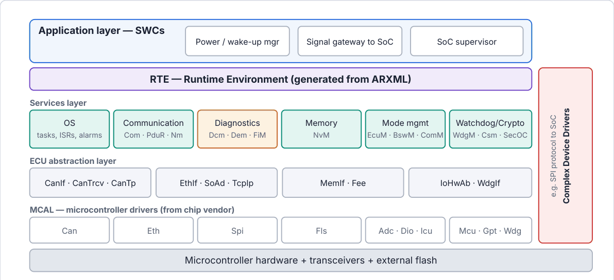
3.2The RTE and the "virtual function bus"
Application components never call each other or the BSW directly. They declare ports in ARXML — a sender/receiver port for data ("I provide GearPosition"), or a client/server port for operations ("I offer GetCalibrationState"). At design time all components are imagined to sit on a virtual function bus. When the system integrator decides which component runs on which ECU, the RTE generator produces C code that implements each connection: a simple variable copy if both components are on the same core, a COM signal if the partner is on another ECU. The application calls Rte_Read_GearPosition(&value) either way. Behaviour is executed in runnables — small functions triggered by events like "every 10 ms" or "data received", which the RTE maps onto OS tasks.
3.3Follow one signal: the gear position
The best way to understand the communication stack is to follow a single signal from the wire to the application. Suppose the gearbox ECU sends a CAN-FD frame containing the gear position every 20 ms.
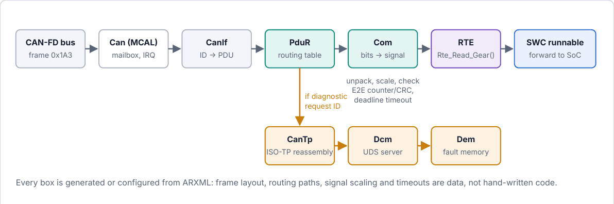
The CAN driver receives the frame in a hardware mailbox. CanIf recognises the CAN ID and turns it into a hardware-independent "PDU" (protocol data unit). PduR, the router, looks up where this PDU should go — to COM for normal signals, or to the transport protocol CanTp if it is a diagnostic message that must be reassembled from several frames. Com extracts the individual signals from the bits, applies scaling, checks end-to-end protection (a counter and CRC that prove the data is fresh and uncorrupted) and monitors timeouts — if no frame arrives within, say, 100 ms, the signal is flagged invalid. Finally the RTE hands the value to the application runnable. In our ECU, that runnable may forward "gear = R" to the SoC over SPI.
3.4The other important stacks
Dcm is the UDS server that parses tester requests. Dem is the fault memory: it collects test results from monitors, debounces them and stores DTCs. FiM (Function Inhibition Manager) switches functions off when certain faults are present. Chapters 10–11 cover these in depth.
NvM manages named blocks of non-volatile data with CRCs, redundant copies and default values. Fee emulates EEPROM in flash (flash can only be erased in big sectors and wears out). Configuration data and DTCs survive power cycles here.
EcuM handles start-up, sleep and wake-up sources. BswM is a rule engine ("if ignition off and no network request → prepare shutdown"). ComM and Nm keep the bus awake while anyone needs it — this is what lets a whole car fall asleep together.
WdgM checks that runnables execute alive, on time and in the right order. OS-Applications provide memory partitioning for freedom from interference. SecOC adds authentication codes to messages so they cannot be spoofed.
In a Classic ECU you can print out every task, every buffer and every message that will ever exist, because they are all generated at build time. Nothing is allocated dynamically. This is what makes worst-case timing analysis and ASIL D certification tractable — and also why "just add one signal" means regenerate, rebuild, retest.
3.5Classic concepts and their Adaptive twins
Once you know the Classic BSW, the Adaptive platform becomes much easier to learn, because most functions have a direct counterpart:
| Job | Classic BSW | Adaptive equivalent |
|---|---|---|
| Start-up, modes, shutdown | EcuM, BswM | Execution Management, State Management |
| Communication | Com, PduR, SoAd, SOME/IP transformer | Communication Management (ara::com) |
| Diagnostic server | Dcm | Diagnostic Manager (ara::diag) |
| Fault memory | Dem | Diagnostic Manager event memory |
| Non-volatile data | NvM, Fee | Persistency (ara::per) |
| Supervision | WdgM | Platform Health Management (ara::phm) |
| Logging | Dlt module | Log and Trace (ara::log, DLT protocol) |
| Software update | Bootloader + flashing | Update and Configuration Management (UCM) |
Signal mismatches between the MCU and the SoC are a classic integration bug: the MCU's ARXML extract says the gear signal is 4 bits with value 7 = "R", the SoC-side interface was generated from an older model where 2 = "R". Everything "works" — and the rear camera never activates. Always check that both sides were generated from the same model version.
"BSW is the standardised plumbing of a Classic ECU — drivers, communication, diagnostics, memory and power modes — configured from ARXML and generated at build time, so that application code only talks to the RTE."
4AUTOSAR Adaptive
On the SoC, our vision software does not run as a bare program. It runs as an Adaptive Application: a normal POSIX process, started by AUTOSAR's Execution Management, talking to the world through generated C++ classes and supervised by the platform. Understanding this frame explains most of what integration engineers argue about.
4.1The building blocks
A machine is one instance of an operating system — a physical SoC, or one virtual machine on a hypervisor. On it runs the Adaptive Platform: a set of standard functional clusters, most of them implemented as daemon processes supplied by an AUTOSAR stack vendor (for example Vector, Elektrobit, ETAS or the OEM's own platform team). Applications use them through the ara:: C++ APIs. Your executable, plus its configuration files (manifests), forms a deployable unit; several of them together are packaged as a software cluster that can be installed and updated independently.
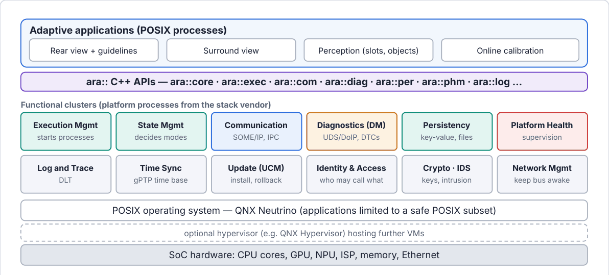
4.2The clusters that matter most day to day
Execution Management (EM) — "the process launcher with rules"
After the operating system has started, EM is the first AUTOSAR process. It reads the manifests and starts every other process with exactly the resources configured for it: scheduling policy and priority, CPU core affinity, memory limits, user and group ID, arguments, environment variables and start-up dependencies. A process tells EM it is ready by calling ReportExecutionState(kRunning); if it does not do so within the configured time, EM treats the start as failed. When a process must stop, EM sends SIGTERM and expects a clean exit before a deadline. EM does not decide when things should run — it executes decisions.
State Management (SM) — "the brain of modes"
Processes are grouped into function groups, each with a set of states. A machine-wide group has states like Startup, Running, Shutdown; a project might define a "Parking" group with Off, RearViewOnly and FullSurround. State Management decides which state each group should be in — based on inputs such as power mode from the MCU, vehicle state, diagnostic sessions or reported errors — and asks EM to perform the transition. SM logic is very project-specific and is often owned by the customer's platform team.
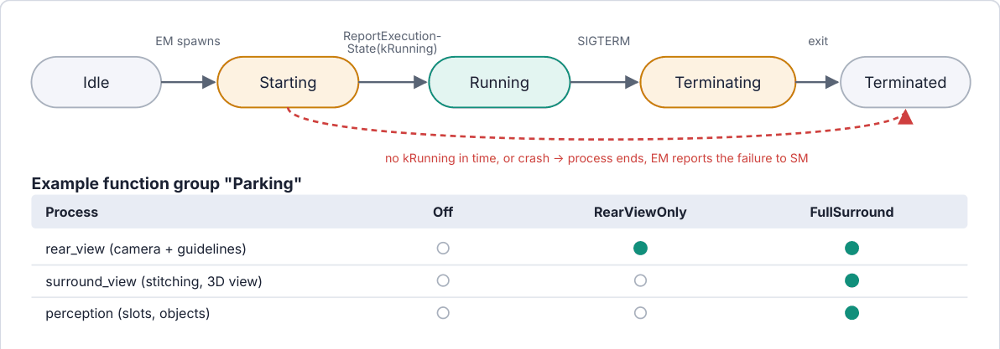
Platform Health Management (PHM) — "is everyone still alive and on time?"
Applications place checkpoints in their code. PHM verifies three things: alive supervision (a checkpoint is reached often enough — e.g. once per camera frame), deadline supervision (checkpoint B follows A within a time window — e.g. frame in to result out within 50 ms) and logical supervision (checkpoints occur in a legal order). Violations are reported to State Management, which can restart a process or switch to a degraded mode; ultimately PHM is connected to a hardware watchdog so a frozen system gets reset. For a perception pipeline, PHM is how a "silent" freeze becomes a detectable fault.
Diagnostics, Persistency, Log and Trace, Time Sync, UCM
The Diagnostic Manager is the UDS server of the SoC: it receives requests over DoIP, dispatches DIDs and routines to the applications that implement them, and keeps the DTC event memory (Chapters 10–11). Persistency gives applications key-value stores and file storage that survive power cycles, with redundancy and integrity checks — a natural home for per-vehicle calibration. Log and Trace sends logs in the DLT format, viewable live with DLT Viewer or CANoe. Time Synchronization provides a vehicle-wide time base via gPTP, which is essential when camera timestamps must line up with ultrasonic or radar data. UCM installs, activates and rolls back software packages, and is the on-board end of OTA updates.
4.3Manifests: configuration instead of code
Much of what a Classic ECU decides at compile time, an Adaptive machine decides from manifests at deployment time:
| Manifest | Describes | Example content |
|---|---|---|
| Execution manifest | How to start one executable | Function group states it runs in, priority, core affinity, arguments, start-up timeout, dependencies |
| Service instance manifest | How services are deployed on the network | SOME/IP service and instance IDs, IP addresses, ports, UDP or TCP, event groups, which binding (SOME/IP or local IPC) |
| Machine manifest | The machine itself | Network interfaces and VLANs, function groups and their states, resource groups, time base |
The manifests are authored in ARXML and usually converted by the vendor tooling into a compact format that the platform reads at runtime. They are the reason an application can sometimes be re-deployed (for example given a different instance ID) without recompiling — and the reason a wrong manifest can break a binary that compiled perfectly.
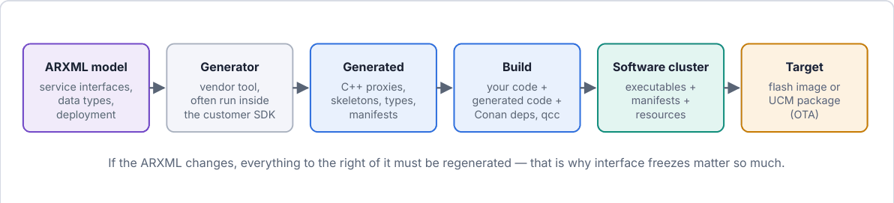
4.4What an application looks like
A heavily simplified service provider. Exact class names and signatures differ slightly between AUTOSAR releases and stack vendors, but the shape is always the same: initialise, report running, offer services, do work, shut down cleanly.
#include <ara/core/initialization.h>
#include <ara/exec/execution_client.h>
#include "parking/surroundview_skeleton.h" // generated from ARXML
int main() {
ara::core::Initialize(); // bring up the ara runtime
ara::exec::ExecutionClient exec;
parking::skeleton::SurroundViewSkeleton sv{
ara::core::InstanceSpecifier{"SurroundViewApp/SvPort"}}; // via manifest
sv.OfferService(); // becomes visible via service discovery
exec.ReportExecutionState(ara::exec::ExecutionState::kRunning);
while (!g_sigterm) { // EM sends SIGTERM on state change
auto status = pipeline.ProcessNextFrame(); // our CV work
sv.CameraHealth.Send(status); // event to all subscribers
}
sv.StopOfferService();
ara::core::Deinitialize();
}A 3-megapixel NV12 frame is about 4.5 MB; at 30 fps from four cameras that is over 500 MB/s. Copying and serialising this through a service event would waste CPU and memory bandwidth. Camera frames therefore stay in shared, DMA-capable buffers and are passed by handle (zero-copy) between the camera stack, the GPU and the NPU. Services carry the results — detected slots, objects, health status, view mode.
- Slow constructors: loading a 200 MB neural network before reporting
kRunningcan exceed EM's start-up timeout. Report running when the process is alive, and expose readiness through a field instead. - Wrong instance specifier: the string must match the port path in the manifest exactly; the symptom is an exception at start-up or a service that is never offered.
- Ignoring SIGTERM: a process that does not exit in time is killed, and the function group transition fails — often visible as "rear view does not switch off".
"Our vision software runs as Adaptive AUTOSAR processes on QNX: Execution Management starts them according to manifests, State Management decides which ones run in which vehicle mode, Platform Health Management watches that they stay alive and on time, and they communicate through generated ara::com service interfaces."
5Services and SOME/IP
Classic CAN communication is like radio broadcasting: every sender transmits its signals on a fixed schedule whether anyone listens or not. Service-oriented communication is more like a subscription and a phone line: a provider announces what it offers, clients subscribe to what they need, and they can also call functions on each other. SOME/IP is the protocol that implements this over automotive Ethernet.
5.1Why services?
Signal-based communication works beautifully for a few hundred small values on a shared bus. It does not scale to Ethernet networks with point-to-point links, megabytes of structured data, software that is updated independently and functions that move between ECUs. Services solve this by describing what is offered rather than which bytes are sent when. The provider can live anywhere; clients find it at runtime; only clients that subscribe receive data, so bandwidth is not wasted. And a service has an interface version, so client and server can detect incompatibilities.
5.2Anatomy of a service interface
Every service interface is built from three kinds of elements. Consider a hypothetical SurroundViewService offered by our ECU:
| Element | Meaning | Example | Typical transport |
|---|---|---|---|
| Event | Data pushed from server to subscribed clients, cyclically or on change | ParkingSlots: list of detected slots every 100 ms | UDP |
| Method | A function the client calls on the server, with request and response (or fire-and-forget) | SetViewMode(TopView) → returns OK / NotAvailable | TCP or UDP |
| Field | A state value with optional getter, setter and change notification — an event with memory | CalibrationState: Valid / Nominal / Invalid | both |
On the wire, everything is numbered: the service has a 16-bit Service ID and each deployed copy an Instance ID; methods have Method IDs; events have Event IDs (with the top bit set, i.e. 0x8000 and above) and are bundled into event groups — clients subscribe to event groups, not individual events. A major and minor interface version protects against incompatible partners.
5.3Service discovery: how partners find each other
SOME/IP-SD runs on UDP port 30490, typically using a multicast address. When a server application calls OfferService(), the platform starts sending OfferService entries: first after a short random delay (to avoid every ECU shouting at once after power-up), then in a repetition phase with increasing intervals, then cyclically in the main phase. Every offer carries a TTL (time to live). Clients that want the service may send FindService to speed things up, and when they see an offer they send SubscribeEventgroup; the server answers with an Ack (or Nack if, for example, the version does not match) and starts sending events to that client by unicast. If offers stop and the TTL expires, clients consider the service gone — which is how a crashed server is detected.
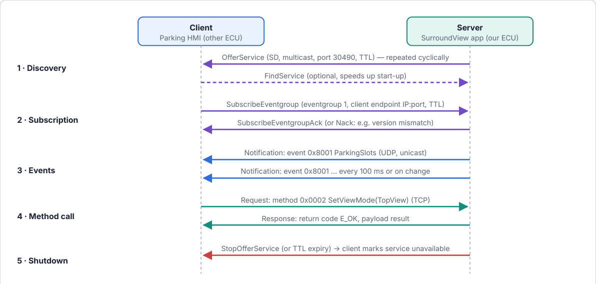
5.4What a SOME/IP message looks like
Every SOME/IP message starts with a fixed 16-byte header. The payload follows, serialised according to the data types in the ARXML — by default big-endian, with length fields in front of strings and dynamic arrays. Crucially, the payload is not self-describing: there are no field names on the wire. Both sides must have been generated from the same data-type definitions, otherwise the bytes are simply interpreted wrongly.
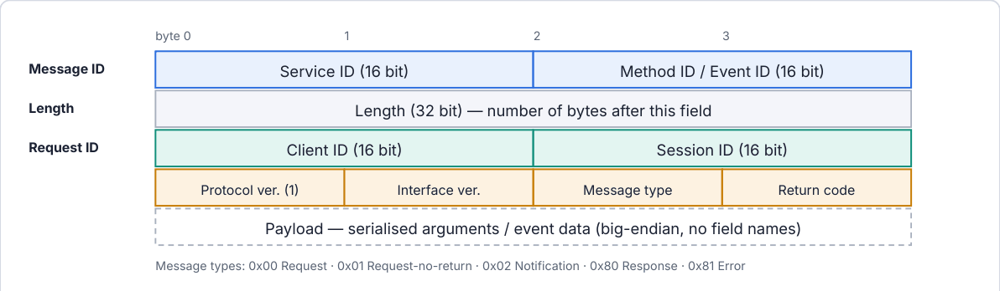
5.5Transport, safety and the local shortcut
UDP is used for cyclic events: low latency, and a lost sample is simply replaced by the next. TCP is used for methods and large data that must arrive reliably. Messages larger than one Ethernet frame over UDP are split with SOME/IP-TP. Safety-relevant data additionally carries E2E protection — a counter, a data ID and a CRC added by the sender and checked by the receiver — which detects corruption, loss, repetition and stale data regardless of what the network did. When client and server are on the same machine, the platform can use a local IPC binding (shared memory or message passing) instead of the network stack, without changing application code. Some platforms also support DDS as an alternative binding.
Wireshark has SOME/IP and SOME/IP-SD dissectors — use "Decode As" for your ports and look at SD entries first: is the offer there, with the expected service, instance, version and endpoint? CANoe can simulate either side of a service from the ARXML. For desktop experiments, vsomeip (the open-source SOME/IP implementation from the COVESA community) lets you write a client on a laptop.
- No offers visible: the server process is not running, the multicast route or VLAN is wrong on the target, or a firewall drops UDP 30490.
- Offers visible but no subscription: service ID, instance ID or major version differs between client and server deployment.
- Subscribed but values look like garbage: serialisation settings (endianness, length-field size, string encoding) differ — classic symptom of mismatched ARXML versions.
- Works after restart only: start-up timing, TTL or the client giving up before the server's first offer.
"SOME/IP turns Ethernet into a service bus: providers announce services through multicast discovery, clients subscribe to event groups or call methods, and the payload layout comes from the same ARXML on both sides — so interface versions and model consistency are everything."
6What the customer delivers: Conan packages
When a customer (OEM) owns the platform software, the Tier-1 does not receive a source tree to compile. It receives versioned, prebuilt packages — the platform SDK, generated interface code, tools — from a package server. In many current projects that mechanism is Conan, the C/C++ package manager. Knowing how Conan thinks makes customer drops far less mysterious.
6.1Why a package manager at all?
C and C++ never had a standard way to distribute libraries, and embedded projects make it harder: the same library must exist for several targets (QNX on ARM64 for the ECU, Linux x86 for simulation and unit tests), with several compilers, in debug and release. A customer platform team supplying many Tier-1s needs to ship binaries without sources (their IP), guarantee that everyone builds against exactly the same versions, and be able to say months later which supplier used which drop. Conan provides precisely that: versioned recipes, prebuilt binaries per configuration, a server to host them and lockfiles to freeze the result. It also gives auditors what they ask for in configuration management: every build is traceable to a set of package references.
6.2Six Conan ideas you need
A conanfile.py that says what a package is called, which version, what it depends on and how it is built and packaged.
The name of a package version, e.g. oem_platform_sdk/5.1.2 (optionally @user/channel), plus a hidden recipe revision hash — so "5.1.2" can be re-published, and the revision tells you which one you got.
One recipe produces many binaries. Each is identified by a package_id: a hash of the settings (OS, architecture, compiler and version, C++ standard, build type), options and dependencies it was built with.
A small text file listing the settings for a build. Cross-compiling uses two: a host profile (QNX, armv8, qcc) for what you build, a build profile (Linux x86_64) for the tools that run on your machine.
A remote is a server (often JFrog Artifactory) that hosts packages. Downloaded packages land in your local cache and are reused across projects.
A JSON file that freezes the whole dependency graph — every version and revision. With a lockfile, a build next year resolves exactly the same binaries as today.
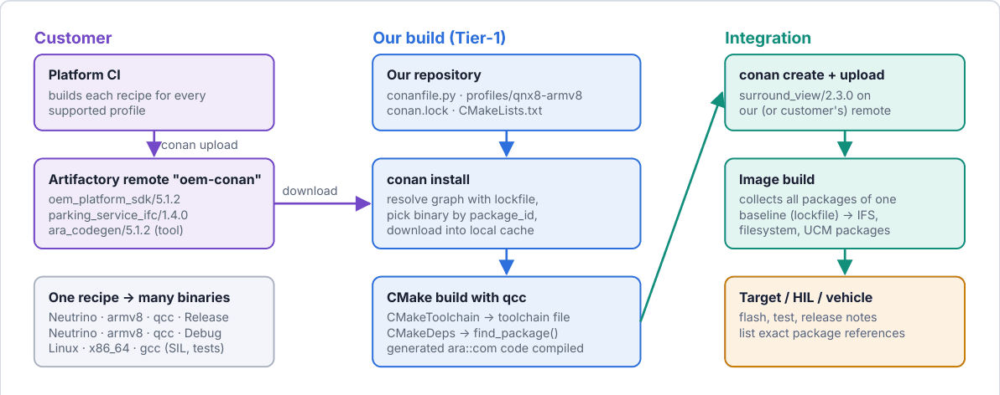
6.3What is typically inside a customer drop
| Package type | Contents | Why we need it |
|---|---|---|
| Platform SDK | Headers and prebuilt libraries of the ara:: runtime and the customer's middleware; CMake config files | To compile and link our applications against the platform |
| Service interface packages | Generated proxies, skeletons and data types for each service interface version, sometimes with the ARXML snapshot | The contract with other ECUs and apps; a new version = an interface change |
Generators and tools ( tool_requires ) | Code generators, manifest converters, image packers that run on the build host | To generate code for our own interfaces and package deployments the same way the customer does |
| Toolchain / sysroot wrapper | Compiler settings, sysroot, sometimes the QNX SDP itself or a pointer to a locally licensed installation | Everyone must compile with identical compiler versions and flags (ABI compatibility) |
| Hardware-related libraries | Camera access wrappers, AI runtime libraries, display helpers | To use Qualcomm features through the customer's approved layer |
| Test and simulation support | x86 builds, mocks of platform services, SIL simulators | To run unit and integration tests on a PC without hardware |
"The customer ships its platform to us as versioned Conan packages — prebuilt binaries for each target configuration, generated interface code and tools — and our lockfile pins exactly which drop every image was built from."
6.4Consuming it: a minimal recipe
from conan import ConanFile
from conan.tools.cmake import CMake, cmake_layout
class SurroundView(ConanFile):
name, version = "surround_view", "2.3.0"
settings = "os", "arch", "compiler", "build_type"
generators = "CMakeDeps", "CMakeToolchain"
def requirements(self):
self.requires("oem_platform_sdk/5.1.2") # ara:: runtime, middleware
self.requires("parking_service_ifc/1.4.0") # generated service bindings
def build_requirements(self):
self.tool_requires("ara_codegen/5.1.2") # runs on the build host
def layout(self): cmake_layout(self)
def build(self): cm = CMake(self); cm.configure(); cm.build()
def package(self): CMake(self).install()# profiles/qnx8-armv8 (illustrative — the customer's profile is authoritative)
[settings]
os=Neutrino
arch=armv8
compiler=qcc
compiler.version=12.2
compiler.cppstd=17
build_type=Release
$ conan install . -pr:h profiles/qnx8-armv8 -pr:b default --lockfile=conan.lock
$ conan graph info . -pr:h profiles/qnx8-armv8 # inspect what would be usedConan computes the package_id your profile needs and looks for exactly that binary. If you build Debug and the customer published only Release, or your profile says C++14 while theirs says C++17, the IDs differ and Conan reports a missing prebuilt package. With open-source packages you could add --build=missing; with a customer's binary-only package there is nothing to build from. The fix is almost always to align your profile with the customer's, not to rebuild.
- No lockfile = no reproducibility. Version ranges and re-published revisions silently change what you get.
- Diamond conflicts: two packages require different versions of the same library; resolve explicitly and document the override.
- ABI drift: mixing binaries built with different compiler versions or standard libraries can link and then crash at runtime.
- A drop is a baseline, not a download: each new drop needs regeneration, a rebuild, SIL/HIL tests and a release note. Plan integration time for it.
7The Qualcomm + QNX platform
The SoC is where computer vision actually happens, and its architecture decides how fast our algorithms run, how frames move through memory and how the system boots. The operating system on top of it, QNX, has a design philosophy quite different from Linux — and that difference explains why it is so common in safety-relevant automotive computers.
7.1Why Qualcomm in a car?
Qualcomm brought its smartphone know-how — very efficient CPUs, strong image signal processors, GPUs and AI accelerators on one die — into automotive-qualified parts with extended temperature range, long supply guarantees and safety documentation. The Snapdragon Cockpit family powers infotainment and instrument clusters; the Snapdragon Ride family targets ADAS and automated driving. "Ride Flex" parts are designed for mixed criticality, so cockpit and ADAS functions can share one SoC. The SA8775P, for example, is marketed for both ADAS and infotainment, designed as a Safety Element out of Context targeting ASIL D use cases, with a Spectra 690 ISP, an Adreno 663 GPU and a Hexagon tensor processor with vector (HVX) and matrix (HMX) units; the SA8650P is a Ride ADAS SoC used in production ADAS controllers. Exact part numbers in your project matter — check them, because accelerators and camera input counts differ.
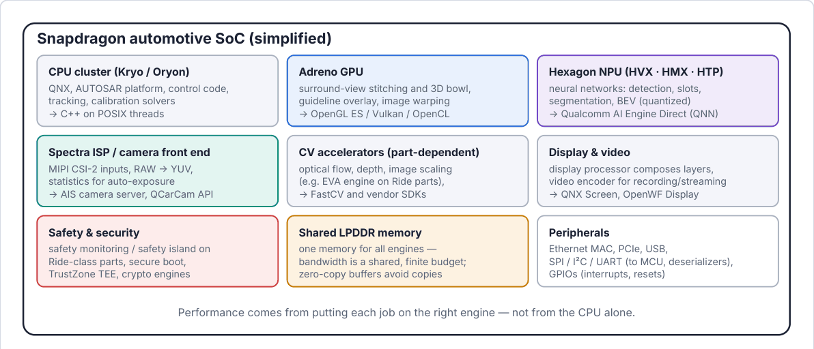
7.2QNX: a microkernel operating system
In Linux, drivers, file systems and the network stack live inside the kernel; a bug in a camera driver can crash the whole machine. QNX Neutrino takes the opposite approach. The microkernel (procnto, kernel and process manager together) does only the essentials: scheduling, inter-process message passing, memory protection, timers and interrupt dispatch. Everything else — drivers, file systems, the network stack, the camera server — runs as ordinary user-space processes called resource managers, each in its own protected memory space. They present themselves as paths (/dev/spi1, /dev/qcarcam), so applications use normal POSIX calls like open() and read(), which the kernel turns into messages to the right process.
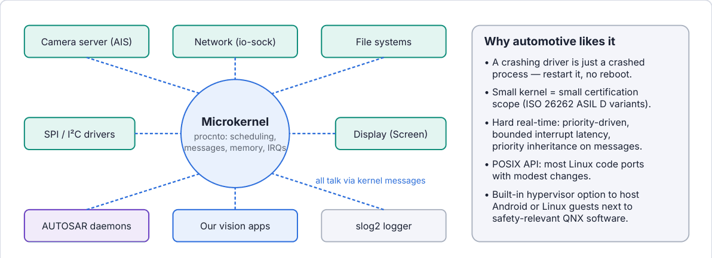
The current generation is QNX SDP 8.0, with a redesigned microkernel aimed at scaling across many cores; the safety-certified variant, QNX OS for Safety 8.0, was launched in August 2025 and is designed to ISO 26262 ASIL D among other standards. Older programmes still run SDP 7.1 — the version matters for compiler versions, networking stack and driver APIs.
Everyday QNX tools worth knowing
| Tool | What you use it for |
|---|---|
pidin | List processes and threads with states, priorities and what they are blocked on — the first look at a hung system. |
slog2info | Read the system logger buffers (drivers, camera server, boot messages). |
hogs, top | Which processes eat CPU. |
tracelogger + System Profiler (Momentics IDE) | Kernel event trace: every context switch, message, interrupt. The tool for latency and priority-inversion bugs. |
on -p … -C …, use, mkifs | Start a program with priority/CPU settings; show a binary's built-in usage text; build boot images (Chapter 8). |
7.3The camera data path
Automotive cameras are remote heads: a sensor (sometimes with its own small ISP) and a serializer that converts pixel data into a high-speed serial stream over a single coax cable — GMSL2 at up to 6 Gbit/s, GMSL3 up to 12 Gbit/s, or TI's FPD-Link. On the ECU board, a deserializer receives up to four cameras and forwards them over MIPI CSI-2, tagging each with a virtual channel. The same link carries a back-channel through which the SoC configures the sensor over I²C (exposure, HDR mode, test patterns) and distributes a frame-sync signal so all cameras expose at the same moment — essential for stitching moving scenes.
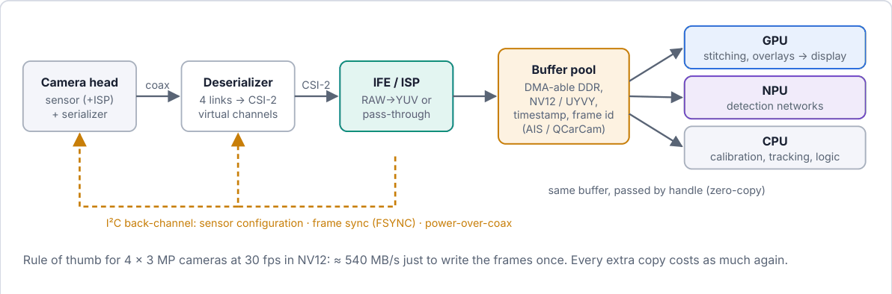
On Qualcomm platforms the camera hardware is owned by the AIS (Automotive Imaging System) server, and applications access it through the QCarCam API: query available inputs, open one, register a set of buffers, set parameters, start streaming, then loop on get frame → process → release frame. Each frame arrives with a buffer index, a hardware timestamp and a sequence number. The same buffers can be imported into OpenGL ES textures or NPU tensors without copying.
- Stride ≠ width. Buffers are padded for hardware alignment; reading them as tightly packed images produces sheared pictures.
- Cache coherency. When the CPU writes a buffer that the GPU or NPU reads (or vice versa), caches must be flushed or invalidated. Missing this gives rare, maddening "corrupted stripes".
- Release frames quickly. The pool is small. Holding a frame while a slow network runs starves the camera, causing dropped frames upstream.
- Quantization is not optional. The Hexagon tensor processor is fastest on 8- or 16-bit integer models; a float model must be quantized and re-validated, ideally with automotive images for calibration.
- Timestamps. Use the hardware start-of-frame timestamp mapped to the synchronized vehicle time base, not the moment your thread woke up.
"We run on a Qualcomm Snapdragon automotive SoC with QNX: frames arrive over GMSL into the AIS camera server, stay in shared zero-copy buffers, and are processed on the engine that fits the job — GPU for surround-view rendering, Hexagon NPU for neural networks, CPU for control — all in isolated QNX processes."
8Boot, IFS, early SPI and the early camera
A full SoC software stack needs many seconds to boot. Regulations and customers expect a rear-camera image almost immediately after reverse is selected. The gap between those two facts drives a whole set of design decisions: a minimal boot image, an early communication link to the MCU, an "early camera" path and a careful handover to the full system.
8.1The race against the clock
In the United States, FMVSS 111 requires the rear-visibility image to be displayed within 2.0 seconds after the driver selects reverse; Europe regulates reversing devices through UN Regulation 158, and OEMs typically set their own, often stricter, targets. Now imagine the worst case: the driver gets in, starts the car and immediately engages reverse. The SoC was completely off. Before a single pixel can be shown, the boot ROM must verify and load the bootloader, DDR memory must be trained, the operating system must start, the camera link must lock, the display must be configured — and the system must have learned from the vehicle that reverse is engaged. A full start including file systems, the Adaptive platform, service discovery and neural-network loading can easily take 10–20 seconds.
Three strategies are combined to close the gap. Suspend-to-RAM keeps the SoC in a low-power state with memory refreshed while the car is likely to be used again, so "boot" is really a resume. A staged boot starts the most time-critical components first. And an early camera path — a small, independent chain of drivers and a tiny application — shows the rear image long before the full stack exists.
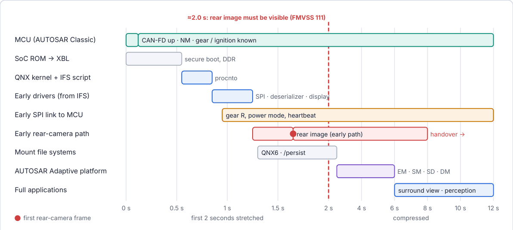
8.2The boot chain and secure boot
On a Qualcomm SoC the primary boot loader in on-chip ROM runs first. It verifies the signature of the next stage, the XBL (eXtensible Boot Loader), which initialises clocks, trains DDR memory, loads firmware for subsystems such as the DSPs, and then loads the next image — a hypervisor or directly the QNX image.
Each stage cryptographically checks the next one. This chain of trust is why production images cannot be modified in the field without proper signing, and why "just change one file in the boot image" is never a small change.
8.3The IFS: QNX's boot image
QNX boots from an IFS — Image File System. It is a single file, built by the mkifs tool from a text buildfile, that contains the start-up code for the board, the microkernel, a boot script, and every binary, library and data file needed in the first moments. The bootloader copies the IFS into RAM and jumps into it. Files inside it appear under /proc/boot and are readable immediately, without any storage driver or file system — which is exactly why time-critical drivers, the early camera application and its data are placed there.
# Illustrative buildfile fragment — names and options are project-specific
[virtual=aarch64le,elf] .bootstrap = {
startup-<board> -v # board init, builds the system page
PATH=/proc/boot procnto-smp-instr # microkernel + process manager
}
[+script] .script = {
slogger2 &
spi-driver -c early.cfg & # early SPI to the MCU
waitfor /dev/spi1
mcu_link & # protocol: gear, power mode, heartbeat
camera_server --early-input=REAR & # only the rear camera at first
early_rvc --cal=/proc/boot/rear_nominal.cal &
storage-driver ... ; waitfor /dev/disk0 # only now the big storage
mount -t qnx6 /dev/disk0.system /system
/system/bin/platform_start & # AUTOSAR Execution Management etc.
}
/proc/boot/rear_nominal.cal = cal/rear_nominal.cal # data files can live in the IFS too
libc.so
...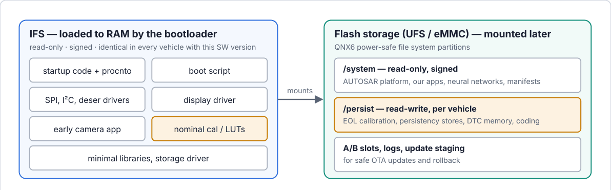
Everything in the IFS is available instantly, so it is tempting to put more in. But the bootloader must copy (and verify, and possibly decompress) the whole IFS before QNX starts, so every extra megabyte delays the very first instruction. Projects therefore keep a small primary IFS for the early path and load everything else from the file system, sometimes via a secondary IFS.
8.4Early SPI: talking to the MCU before anything else exists
The early camera path needs to know one thing from the vehicle: is reverse engaged? That information arrives on CAN, and the CAN bus belongs to the MCU, which has been running for a long time already. The SoC cannot wait for Ethernet, TCP/IP, SOME/IP service discovery and the Adaptive platform to come up. So the board has a direct SPI link between SoC and MCU, and its driver plus a small protocol process are started from the IFS script within the first second. Over this "early SPI" channel the MCU forwards gear, ignition and power mode, and the SoC reports its status back.
SPI is a simple synchronous bus: the master drives a clock and both sides shift bits at the same time — every transfer is simultaneously a send and a receive. Usually the SoC is master; since the MCU cannot start a transfer on its own, it signals "I have data" with a GPIO interrupt line, and the SoC then clocks out a frame. On top of the raw bus, projects define a small framed protocol:
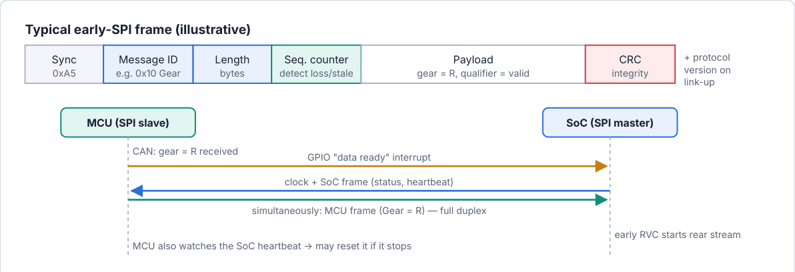
The protocol must be robust because it is often safety-relevant: a sequence counter detects lost or repeated frames, a CRC detects corruption, a timeout detects a silent partner, and a version handshake at link-up prevents MCU and SoC software from different releases misinterpreting each other. The same link frequently carries the power-down handshake ("SoC, prepare to shut down" — "ready, cut power") and the MCU's supervision of the SoC. Later in boot, some traffic may move to Ethernet/SOME/IP, but the SPI link usually stays as the always-available path.
Projects use "early SPI" in two related ways: the early SoC↔MCU SPI communication channel described here, and sometimes an SPI-NOR flash read very early in boot (for boot images or small data such as calibration). Both serve the same purpose — providing something essential before the main storage and network stacks exist. Check which one your project documents mean.
8.5Early camera and the handover
The early rear-view application is deliberately primitive: one camera, a fixed processing path (often just a GPU or display-pipeline warp using a precomputed lookup table), static or simple steering-dependent guidelines, no AUTOSAR, no services. Once the full system is up — surround view, dynamic guidelines, object overlays — it must take over the display without a black frame and in the correct state (if the driver is still reversing, the image must not blink). This handover is a common source of late bugs: both paths competing for the camera, display layers flashing, or the full system starting in the wrong view.
- One innocent
waitforor log call added before the camera in the IFS script can push the first frame past the deadline. Treat the early boot script as a timing-critical artefact with reviews and measurements. - Measure end to end: from the reverse signal on CAN to light on the display. Toggle GPIOs at milestones and capture them with a logic analyser, or film the display with a high-speed camera next to a CAN-triggered LED.
- Cold temperatures, first boot after flashing (filesystem checks) and large DTC memories make boots slower — test the worst case, not the lab case.
"To meet the 2-second rear-camera requirement we don't wait for the full stack: a minimal QNX boot image starts the SPI link to the MCU, the camera and the display within the first second and shows the rear view, and the full AUTOSAR-based system takes over seamlessly once it is up."
9Camera calibration files
A fisheye image is just a distorted picture until you know two things: how the lens bends light, and exactly where the camera sits on the car. Calibration files carry that knowledge. They are small, but almost every geometric function — stitching, guidelines, distance estimation, parking-slot positions — depends on them being correct, present at the right moment and consistent across teams.
9.1Why calibration matters so much
Two "identical" cars from the same production line differ: a mirror camera may sit a few millimetres off and be rotated by tenths of a degree up to about a degree. That sounds negligible, but a 1° yaw error makes a point 5 m away appear about 9 cm sideways; stitching seams in the surround view visibly break, guidelines no longer match the real trajectory and detected parking slots shift. Calibration measures each camera on each car so software can compensate.
9.2What is inside a calibration file
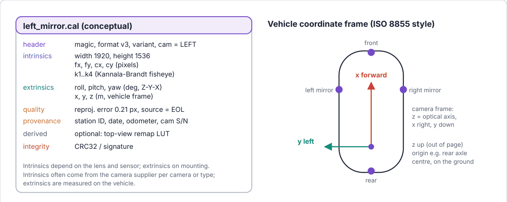
Intrinsics describe the camera itself: image size, focal lengths and principal point in pixels, and the distortion model — for fisheye lenses typically the Kannala-Brandt model with four coefficients, or a polynomial model. Extrinsics describe the pose: three rotation angles and three translations relative to the vehicle coordinate frame. Around them sit metadata that make the file trustworthy: a format version, which camera and vehicle variant it belongs to, how and when it was produced, its quality (reprojection error) and an integrity check. Some systems also store derived data such as remapping lookup tables, so they need not be computed at boot.
9.3The calibration lifecycle
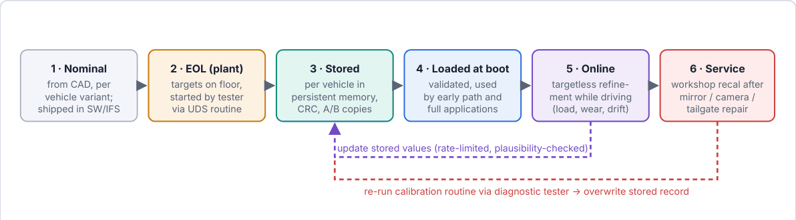
At the end of line (EOL) in the plant, the vehicle stops in a calibration area with known targets (checkerboards or special patterns on the floor or walls). A plant tester connects over the diagnostic interface, switches the ECU into an extended session, authenticates, and starts a calibration routine (UDS RoutineControl). The ECU captures frames, detects the targets, solves for each camera's pose and reports a result; the tester polls for completion and the result code (OK, or why not: targets not found, too much deviation, vehicle moving). Valid results are written to persistent memory. In targetless or online calibration, the ECU continuously estimates small corrections from natural features and lane markings while driving — useful because loading the boot, tyre pressure and wear change the camera pose slightly. In the workshop, the same diagnostic routines are used after a repair.
9.4Where calibration lives at boot — and why the IFS matters
Here the boot chapter and the calibration chapter meet. The early rear-camera path needs calibration in the first second, before the main file systems are mounted. The IFS is available immediately — but it is read-only, signed and identical for every vehicle running that software version. It can therefore hold the nominal calibration and nominal lookup tables, never the per-vehicle EOL result. Projects solve this in a few ways: a small dedicated partition (or SPI-NOR flash) that the early path can read with a minimal driver; letting the MCU keep a copy and deliver it over early SPI; or starting with nominal values and switching to the measured calibration once storage is mounted (which can cause a visible jump in the image — acceptable for some customers, not for others).
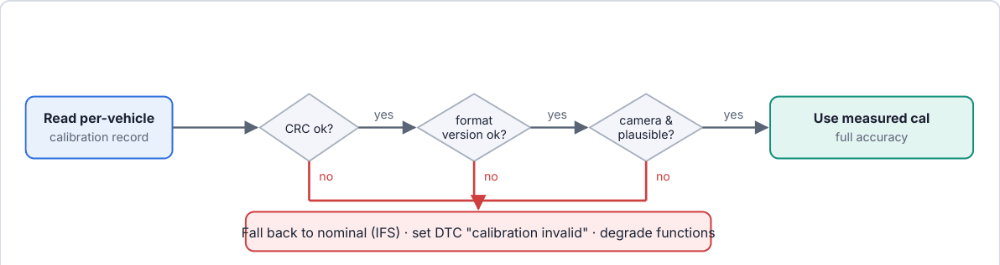
- Conventions: degrees vs radians, rotation order (Z-Y-X vs X-Y-Z), camera frame (z forward, y down) vs vehicle frame (z up), millimetres vs metres. Write them into the interface specification and test with a known pose.
- Resolution mismatch: intrinsics measured at full sensor resolution but applied to a cropped or binned output image.
- Non-atomic writes: power loss while writing leaves a half-written file. Write a temporary copy, sync, then switch (or keep A/B copies with sequence numbers).
- Folded mirrors: a folded mirror changes the side-camera pose completely; the function must detect it (from a vehicle signal) and react.
"Each camera has a calibration record — lens intrinsics plus its pose on this particular car — that is measured at the end of the production line via a diagnostic routine, stored per vehicle with integrity checks, validated at every boot with a nominal fallback from the boot image, and refined online while driving."
10Diagnostics I: UDS, sessions, DIDs and RIDs
Every ECU must be able to explain itself to the outside world: who it is, which software it runs, what went wrong and when, and how to test, calibrate or update it. Unified Diagnostic Services (UDS, ISO 14229) is the common language for this. The plant, the workshop, the developer's bench and the OTA backend all speak it.
10.1Who uses diagnostics, and for what
Write VIN and variant coding, check software versions, run the EOL camera calibration, verify no faults before the car leaves the line.
Read and clear fault codes, view live data, run tests and recalibration after repairs, flash updated software.
Read internal states, trigger self-tests, inspect calibration quality, reproduce faults on the bench with CANoe.
10.2How a request reaches our ECU
UDS defines the messages; a transport protocol carries them. On CAN, ISO-TP (ISO 15765-2) cuts a long message into frames and reassembles it with flow control. On Ethernet, DoIP (ISO 13400) carries UDS over TCP port 13400: the tester first discovers vehicles (vehicle announcement and identification over UDP), opens a TCP connection to the gateway, performs a routing activation, and then sends UDS messages addressed by logical addresses — a 16-bit number per ECU. The central gateway routes each request to the target ECU.
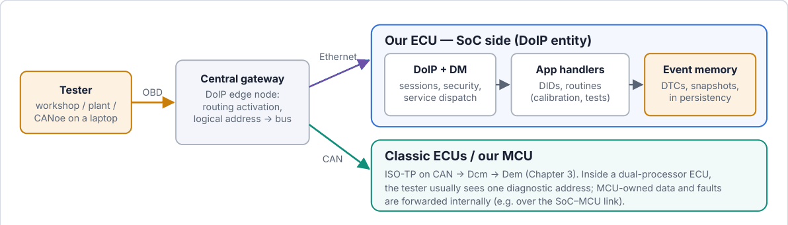
10.3The anatomy of a UDS message
A request starts with a one-byte Service ID (SID), followed by a sub-function or identifier and parameters. A positive response echoes the SID plus 0x40. A negative response is always three bytes: 7F, the SID, and a Negative Response Code (NRC) that tells you exactly why. Learning ten NRCs saves hours on the bench.
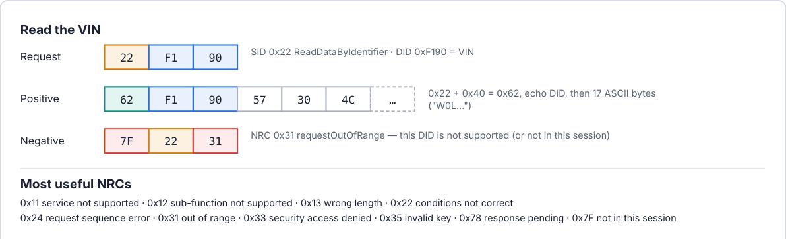
10.4Sessions and security: the ECU's access control
Not every service is allowed at every time. After power-up an ECU is in the default session, where it allows harmless things: reading identification and fault codes. To write data, run routines or control outputs, the tester switches to the extended session (10 03); for flashing, to the programming session (10 02), which typically hands control to a bootloader. A non-default session times out after about 5 seconds without traffic (the S3 timer), so testers send TesterPresent (3E 80) periodically.
Sensitive operations additionally require SecurityAccess (0x27): the tester requests a seed, the ECU answers with a random number, the tester computes a key with a secret algorithm (often delivered by the OEM as a "seed-key DLL" for tools such as CANoe), and the ECU unlocks the level if the key matches. Wrong keys are counted and lead to lock-out delays. Newer architectures use Authentication (0x29) with certificates instead of shared secrets.
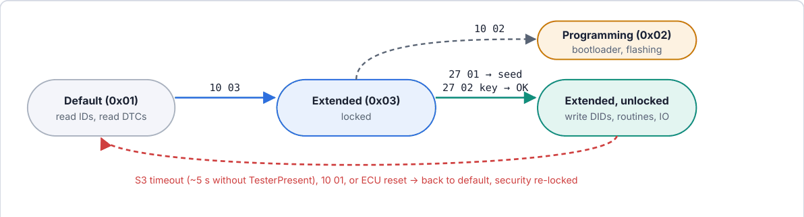
10.5The services you will actually use
| SID | Service | What it is for in a camera ECU |
|---|---|---|
10 | DiagnosticSessionControl | Switch to extended or programming session. |
11 | ECUReset | Restart after writing calibration or coding (11 01 hard reset). |
14 | ClearDiagnosticInformation | Clear DTCs (14 FF FF FF = all groups). |
19 | ReadDTCInformation | Read faults by status mask, snapshots, extended data, fault-detection counters. |
22 / 2E | Read / WriteDataByIdentifier | Read versions, live data, calibration values; write coding or calibration. |
27 / 29 | SecurityAccess / Authentication | Unlock protected services. |
28, 85 | CommunicationControl, ControlDTCSetting | Silence normal communication and stop DTC storage during flashing. |
2F | InputOutputControlByIdentifier | Force outputs for tests, e.g. switch a camera's power or show a test pattern. |
31 | RoutineControl | Start / stop / get results of routines: EOL calibration, self-test, erase memory. |
34 36 37 | RequestDownload, TransferData, TransferExit | Software download blocks during flashing. |
3E | TesterPresent | Keep a non-default session alive. |
10.6DIDs: named pieces of data
A Data Identifier (DID) is a 16-bit number that names a piece of data the ECU can report or accept. Some are standardised in ISO 14229: F186 active session, F187 spare part number, F18A system supplier identifier, F18C ECU serial number, F190 VIN, F191 hardware number, F195 supplier software version. Most others are defined by the OEM in the diagnostic description (an ODX/PDX file or a Vector CDD file): for a camera ECU you would find DIDs such as "calibration status per camera", "camera link status", "frame rate per camera", "ECU temperature" or "current view mode". The description defines each DID's byte layout, scaling, units and enumerations — and in which session and security level it may be read or written.
10.7RIDs: things the ECU should do
A Routine Identifier (RID) names an action: erase memory (FF00), check programming dependencies (FF01), or project-specific ones like "start EOL camera calibration", "run camera self-test" or "reset online calibration". RoutineControl has three sub-functions: 01 start, 02 stop, 03 request results. Short routines answer immediately; long ones — a calibration that captures and processes frames for several seconds — are started, then polled for results.
→ 10 03 enter extended session
← 50 03 00 32 01 F4 OK (P2 = 50 ms, P2* = 5000 ms)
→ 27 01 / ← 67 01 <seed> request seed
→ 27 02 <key> / ← 67 02 unlocked
→ 31 01 02 10 <params> start RID 0x0210 "EOL calibration" (illustrative)
← 71 01 02 10 00 started
→ 31 03 02 10 request results …
← 71 03 02 10 01 … still running
→ 31 03 02 10
← 71 03 02 10 02 <results> finished: per-camera status + quality
← 7F 31 22 (alternative) conditions not correct, e.g. vehicle movingThe OEM's diagnostic description is the single source of truth. From it, tools generate the ECU-side configuration (Dcm on Classic, Diagnostic Manager on Adaptive) and the tester-side databases (CANoe, plant and workshop testers). Application code only implements the "callbacks": read this DID's value, run this routine. When the description changes, both sides must be regenerated — another reason drops must be integrated as a set.
"UDS gives every tester the same language: sessions and security control access, DIDs name data we report or accept, RIDs name actions like our end-of-line camera calibration, and everything is defined in the OEM's diagnostic description from which both ECU and tester configurations are generated."
11Diagnostics II: DTCs, DEM and maturation time
A Diagnostic Trouble Code is the ECU's written record that something went wrong. Behind each DTC sits a monitor that checks a condition, a debouncing algorithm that decides when a problem is real, and a status byte that tells the workshop whether the fault is happening now, happened before, or has healed. "Maturation time" is the heart of the debouncing: how long a fault must persist before it counts.
11.1What a DTC is
In UDS, a DTC is three bytes. The first two encode the familiar five-character code — a letter for the system (P powertrain, C chassis, B body, U network) and four hex digits — and the third byte is the Failure Type Byte (FTB), which says how the component failed: open circuit, no signal, over temperature, missing calibration. With each DTC the ECU stores a status byte and, optionally, snapshot data (freeze frame: conditions at the time of failure) and extended data (counters).
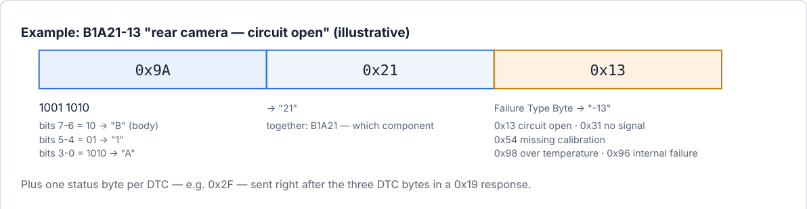
11.2From monitor to DTC
A monitor is a small piece of code that tests one condition and reports the result, typically every cycle: "camera link locked: OK", "frame received within 100 ms: OK", "ECU temperature below limit: not OK". On Classic AUTOSAR it reports to the Dem (Diagnostic Event Manager); on Adaptive to the Diagnostic Manager via ara::diag::Monitor, with results such as pre-failed, pre-passed, failed or passed. Each monitor belongs to a diagnostic event, and one or more events map to a DTC. Monitors usually run only under enable conditions — for example not during engine cranking when the supply voltage dips, or a calibration plausibility check only while driving straight above a certain speed — so that normal vehicle situations do not create faults.
11.3Debouncing and maturation time
A camera link can drop for a few milliseconds when the starter motor pulls the battery voltage down; a single frame can be corrupted by electromagnetic interference. If every such glitch stored a DTC, cars would arrive at workshops with fault memories full of noise, parts would be replaced unnecessarily (expensive "no fault found" returns) and customers would see warnings for nothing. On the other hand, a real fault must be recognised quickly enough for the safety concept and the function to react. Debouncing resolves this tension, and the maturation time is its key parameter: the time a fault condition must be present (continuously, or dominantly) before the event is qualified as failed. The mirror-image de- maturation (healing) time defines how long the condition must be OK before it is qualified as passed.
AUTOSAR offers two standard algorithms. Time-based debouncing literally runs a timer: failed after the condition has persisted for, say, 500 ms. Counter-based debouncing uses a fault detection counter (FDC) from −128 to +127: every pre-failed report adds a step, every pre-passed report subtracts one; reaching +127 qualifies the failure, reaching −128 qualifies the pass. With a step of +32 at a 10 ms monitor cycle, a continuous fault matures in about 40 ms; with smaller steps or a slower cycle, it takes longer — so the maturation time is designed through step sizes and cycle time.
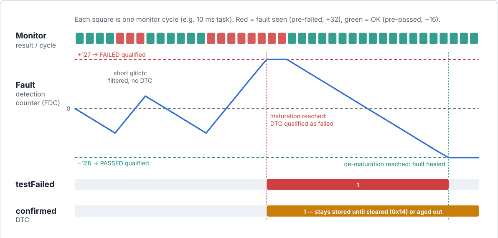
19 14.The function's safety reaction does not have to wait for DTC maturation. A surround-view application can grey out a camera tile after two missing frames, while the DTC for "no signal" only matures after 500 ms of continuous loss. Debouncing protects the fault memory from noise; the function's own monitoring protects the driver. Mixing up the two is a frequent source of disagreements between safety, diagnostics and function teams.
11.4The status byte: eight flags that tell the story
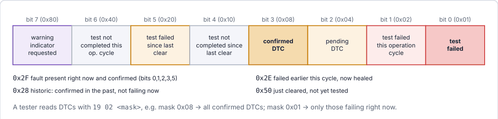
11.5The life of a DTC
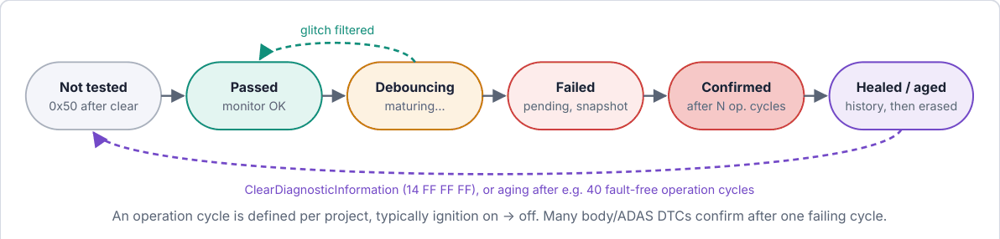
11.6Context: snapshots, extended data and function inhibition
When a DTC is stored, the ECU records a snapshot (freeze frame) of conditions — typically odometer, supply voltage, ECU temperature, vehicle speed, time since ignition and, for a camera ECU, which camera and what link state. Extended data adds counters: how often the fault occurred, how many cycles since it was last seen (the aging counter), the maximum FDC reached. Testers read them with 19 04 and 19 06. These records are what turns "the camera sometimes goes black" into "it happens at −20 °C with 9.5 V supply right after a cold start".
Finally, faults have consequences for functions. On Classic AUTOSAR the Function Inhibition Manager blocks functions when certain events fail; on Adaptive the equivalent logic is usually in State Management or in the application. For a camera ECU: a failed left camera may disable the 3D surround view but keep the rear view; an invalid calibration may switch off dynamic guidelines and show a "calibration required" message on the display.
An illustrative camera DTC catalogue
| Fault | Failure type | Typical maturation | Function reaction |
|---|---|---|---|
| Camera link open (connector off) | 0x13 circuit open | a few hundred ms | Camera tile "unavailable"; rear view off if rear |
| No video frames although link locked | 0x31 no signal | a few hundred ms | As above |
| Calibration missing or invalid | 0x54 missing calibration | immediate at boot check | Nominal fallback, guidelines limited, message to driver |
| ECU over-temperature | 0x98 over temperature | seconds | Reduce load: lower frame rate, disable perception |
| Required CAN signal missing | 0x87 missing message | signal timeout × N | Function-dependent, e.g. no dynamic guidelines without steering angle |
- Monitors without enable conditions produce DTCs during cranking, flashing or sleep transitions. Use ControlDTCSetting (
85 02) during flashing and design enable conditions with the vehicle team. - Different interpretations of "maturation": continuous time vs counter with decay vs N-out-of-M frames. Write the exact algorithm into the spec and test it with fault injection (CANoe, connector unplug, voltage sweeps).
- DTC storms: one root cause (supply voltage) triggering ten DTCs. Use dependencies so only the root cause is stored.
"Each DTC is fed by a monitor whose results are debounced — the maturation time decides how long a fault must persist before it is stored — and the stored status byte, snapshot and counters tell the workshop whether it is happening now, when it happened and under which conditions."
12CANoe: what it does and how to set it up
On a lab bench our ECU is alone: no ignition key, no gearbox, no gateway, no other ECUs keeping the network awake. Without them it will either fall asleep, or wake up, miss every expected message and fill its fault memory. Vector CANoe solves this by pretending to be the rest of the car — and, at the same time, it is the window through which we watch the bus, run diagnostics and automate tests.
12.1What CANoe is
CANoe is Vector's development and test environment for vehicle networks. It connects to real buses through Vector interface hardware (or runs purely virtually) and does four jobs in one configuration:
Rest-bus simulation (RBS): every ECU in the network database that is not physically present is simulated — its messages are sent with the right cycle times, counters and checksums, and its services are offered.
Trace, graphics and data windows decode raw frames and packets into named signals and service calls using the databases; logging to BLF files allows replay later.
A built-in tester driven by the OEM's diagnostic description: symbolic requests, decoded responses, fault-memory window, seed-and-key, DoIP or ISO-TP transport.
Test modules written in CAPL, .NET or designed in vTESTstudio run scenarios automatically and produce reports — the basis for regression testing on HIL benches.
Its little sibling, CANalyzer, focuses on analysis with limited simulation; CANoe adds full simulation and test automation. Options extend it per technology — for example the Ethernet option for automotive Ethernet, SOME/IP and DoIP.
12.2A typical camera-ECU bench
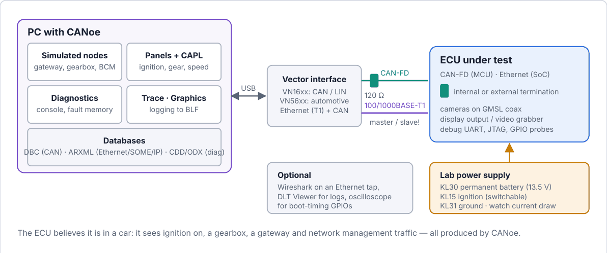
12.3How CANoe works inside
A CANoe configuration (.cfg) has two halves. The Simulation Setup shows each bus with its nodes. Nodes come from the network database; each one can be switched between simulated (CANoe plays it) and real (deactivated, because the physical ECU is present). Simulated nodes are brought to life by the Interaction Layer (IL), which knows from the database which messages a node sends and how often: you only set signal values, and the IL transmits them with correct timing, counters and — if configured — end-to-end protection and authentication. The Measurement Setup describes where incoming data flows: through filters into windows (Trace, Graphics, Data, State Tracker) and into loggers.
Behaviour beyond plain cyclic sending is written in CAPL (Communication Access Programming Language), a C-like, event-driven language: functions run on start, on message, on signal change, on timer, on key press, on system-variable change or on diagnostic response. System variables connect everything — panels (GUI controls built in the Panel Designer), CAPL code and test modules read and write them.
/* Illustrative CAPL: gear selection and a diagnostic request (names from your databases) */
on key 'r' {
@sysvar::Vehicle::Gear = 7; // panel shows "R"
$GearboxStatus::GearPosition = 7; // IL sends it cyclically with counter + CRC
write("Reverse engaged at %f s", timeNow() / 100000.0);
}
on key 'c' {
diagRequest RearCam.EolCalibration_Start req; // symbolic request from the CDD/ODX
diagSendRequest(req);
}
on diagResponse RearCam.EolCalibration_Start {
write("Calibration routine answered, positive = %d", diagIsPositiveResponse(this));
}12.4Setting up a bench, step by step
- Licences and drivers
Install CANoe with the needed options (e.g. Ethernet), the Vector driver set and the licence (dongle or licence server). In Vector Hardware Config, map CANoe's application channels (CAN 1, ETH 1 …) to physical ports of the interface.
- Wiring and power
Lab supply at about 13.5 V on KL30, a switchable KL15 for ignition, a common ground. CAN needs 120 Ω termination at each end of the bus — measure ~60 Ω between CAN-H and CAN-L with power off. Automotive Ethernet (T1) is point-to-point and needs one side configured as master, the other as slave; two masters means no link.
- Configuration and databases
Create a configuration from a template with the right bus types and bit rates (CAN-FD needs both arbitration and data rates). Add the customer's databases: DBC for CAN, ARXML for Ethernet/SOME/IP, matching exactly the release your ECU software was built from.
- Rest-bus simulation
Insert the network nodes, set your ECU's node to real, enable the IL for all others. Make sure network management messages are sent (or the ECU will sleep) and that E2E counters/CRCs and SecOC are handled — otherwise the ECU rejects signals as invalid.
- Diagnostics
Add the diagnostic description (CDD, ODX/PDX) to the ECU, select the transport (ISO-TP CAN IDs, or DoIP with logical addresses and the ECU's IP), and configure the OEM's seed-and-key DLL. Test with a read of
F195(software version). - Controls and logging
Add panels for ignition, gear, speed and steering angle; enable BLF logging; optionally add test modules for repeated scenarios.
- Validate the bench
Start the measurement, switch KL15 on and check: ECU awake and transmitting, no "missing message" DTCs in the fault-memory window, SOME/IP offers from the ECU visible, diagnostic session change works. Only now start the real work.
- Fault injection: stop a simulated message, corrupt a CRC, change a signal to an invalid value — and watch the ECU's DTCs mature.
- Replay: play back a BLF log recorded in a vehicle so the ECU sees a real drive (gear, speed, steering) on the bench.
- SOME/IP: from the ARXML, CANoe can act as client or server of a service, decode SD entries and payloads — ideal to test our services before the partner ECU exists.
- Automation: CANoe can be remote-controlled (COM interface, command line) from CI pipelines for nightly HIL regression runs.
- ECU goes to sleep after a few seconds → network management not simulated or KL15 not on.
- ECU stores "signal invalid" or "missing message" DTCs although CANoe is sending → database version mismatch, wrong E2E profile, counters not incrementing.
- No Ethernet link → T1 master/slave or speed mismatch; VLAN not configured; wrong IP subnet on the CANoe side.
- Diagnostics "no response" → wrong logical address or CAN IDs, routing activation not done, or the ECU is still booting.
"CANoe makes the bench look like a car: it simulates every missing ECU from the OEM's databases, lets us drive scenarios with panels and CAPL, acts as the diagnostic tester, and records and replays everything for analysis and automated regression tests."
13Three end-to-end stories
Concepts stick when you see them work together. The three stories below follow real-world situations through every layer described in this chapter. They are a good way to test your understanding — and a good structure for explaining the system to someone new.
13.1Story 1 — "Cold start, straight into reverse"
The car has been parked overnight; the SoC is fully off. The driver gets in, starts the car and immediately selects reverse.
- The network wakes up (0 ms)
Activity on the CAN bus wakes the MCU's transceiver. The MCU's EcuM runs its start-up, joins network management and, through BswM rules, switches on the SoC's power rails in the right sequence.
- Secure boot (≈0–0.5 s)
The SoC's boot ROM verifies and starts the XBL, which trains DDR memory, loads subsystem firmware and copies the signed QNX IFS into RAM.
- The IFS script runs (≈0.5–1.2 s)
The QNX microkernel starts and executes the boot script: logger, SPI driver, the MCU-link process, the deserializer and camera server for the rear input, and the display driver — all from
/proc/boot, no file system needed. - Reverse is known (≈1 s)
The gearbox ECU's CAN frame says "R". On the MCU it travels Can → CanIf → PduR → Com → RTE → the gateway SWC, which writes it into the next early-SPI frame with a sequence counter and CRC.
- First image (≈1.6 s)
The early rear-view application starts the stream, warps each frame with a lookup table built from calibration, overlays static guidelines and pushes it to a display layer — inside the 2-second requirement.
- The full system arrives (≈3–8 s)
Storage is mounted; Execution Management starts the AUTOSAR platform; State Management puts the "Parking" function group into the right state; our applications start, report
kRunning, offer their SOME/IP services and load neural networks onto the NPU. - Seamless handover
The full rear-view application reports ready, takes over the display layer without a black frame, and the early path releases the camera. PHM now supervises the pipeline; the MCU keeps watching the SoC's heartbeat over SPI.
Touches: Chapters 1, 3, 4, 7, 8, 9. Typical owners: MCU/BSW team, BSP and boot team, CV team, integration team.
13.2Story 2 — "End-of-line calibration in the plant"
A brand-new car rolls into the calibration station. Its ECU carries only nominal calibration and therefore a stored "calibration missing" DTC.
- Connect and identify
The plant tester connects via DoIP, activates routing and reads VIN (
22 F190) and software version (22 F195) to select the correct procedure. - Get permission
10 03extended session, then27seed and key for the plant security level; TesterPresent keeps the session alive. - Start the routine
31 01 <RID>with parameters such as the target layout. The ECU checks preconditions — vehicle stationary, doors closed, mirrors unfolded — and answers NRC0x22if any is violated. - Measure
For each camera the ECU captures frames, detects target features, solves the pose from the known target geometry and intrinsics, and checks it against tolerance windows around the nominal pose.
- Poll and decide
The tester polls
31 03 <RID>: "running", then per-camera results with a status and quality value, or a reason code such as "targets not found". - Store and verify
The ECU writes the records atomically to persistent memory with CRCs. The tester reads them back through DIDs, clears DTCs (
14 FF FF FF), resets the ECU (11 01), and confirms after the reboot that calibration is loaded and no DTC returns. The plant's database keeps the results for traceability.
Touches: Chapters 9, 10, 11. Typical owners: CV team (algorithm), diagnostics team (routine definition), plant engineering (procedure).
13.3Story 3 — "Sometimes the left side of the 360° view is black"
A customer complains about an intermittent black area in winter. The car is in the workshop, where everything works fine.
- What happened in the field
On cold mornings the left camera's GMSL link lost lock. The monitor reported pre-failed each cycle; after the maturation time the event qualified as failed: DTC "left camera — circuit open" with status
0x2F. A snapshot recorded −18 °C, 11.9 V and 4 s after ignition. The surround-view application had already greyed out the tile after a few missing frames and shown a message. - It healed
As the car warmed up, the link stabilised; the counter de-matured and testFailed cleared. In later cycles the status became
0x28: confirmed in the past, not failing now. - The workshop reads the history
19 02 08lists confirmed DTCs;19 04returns the snapshot (cold, early after start);19 06shows an occurrence counter of 7. "Sometimes" has become a reproducible condition. - Repair
The technician finds a corroded connector and replaces the camera. At the next boot the ECU notices a different camera serial number: the stored calibration belongs to the old camera, so it falls back to nominal and sets "calibration invalid".
- Recalibrate and close
The workshop runs the service calibration routine through the tester, clears the fault memory, and verifies a clean read-out. The intermittent fault is closed with evidence.
Touches: Chapters 7, 9, 10, 11. Lesson: good monitors, sensible maturation times and rich snapshot data save days of guessing.
14Cheat sheet: roles, early questions and one-line summaries
Each role touches the same system from a different angle. These summaries list what to know, what to ask and where problems typically come from, followed by one sentence per topic.
Computer-vision engineer
- Know your frames: pixel format, stride, timestamp source, frame-sync, buffer ownership and how fast you must release.
- Know your engine: which parts run on CPU, GPU or NPU; quantization requirements; memory bandwidth budget.
- Know your calibration: model, units, coordinate frames, where it is loaded from, what happens on fallback.
- Know your deadlines: start-up timeout before
kRunning, per-frame latency, PHM checkpoints. - Own your monitors: which DTCs your function reports, their enable conditions and maturation, and your function's own degradation.
- Publish results, not images, through service interfaces; keep pixels zero-copy.
Integration engineer
- Baselines: Conan lockfile, ARXML version, diagnostic description and MCU software must all belong to the same release.
- Boot: IFS buildfile and script, start order, measured timing from CAN to display.
- Platform: manifests, function groups, process states, service discovery, logs (
slog2info, DLT). - Communication: SOME/IP offers and subscriptions (Wireshark), early-SPI protocol versions, E2E.
- Diagnostics: DIDs/RIDs mapped to handlers, session and security rules, DTC behaviour verified with fault injection.
- Bench: CANoe RBS that keeps the ECU awake and DTC-free; automated smoke tests per drop.
Manager
- Responsibility map: who delivers platform, BSP, AUTOSAR stack, diag description, MCU software — and when.
- Critical path: early camera timing, EOL calibration readiness for plant start, diagnostic completeness for workshop release.
- Drops are work: every customer Conan or ARXML drop needs integration and test time.
- Interface freezes: late service-interface or DTC changes ripple through generated code, testers and plant.
- Evidence: traceability from requirements to tests, configuration baselines (ASPICE), safety and security work products (ISO 26262, ISO/SAE 21434).
- Bench capacity: CANoe licences, interfaces and HIL time are often the hidden bottleneck.
14.1Questions worth asking early in a project
| Topic | Questions |
|---|---|
| Platform and deliveries | Which AUTOSAR release and stack vendor? Conan remote, profiles and drop cadence? What is in each package, and who supports it? |
| Interfaces | Which service interfaces do we provide and consume, with which versions? When is the interface freeze? Is the early-SPI protocol ours or theirs? |
| Timing | Which timing targets apply — rear image after reverse, surround view after ignition, resume from standby? Measured how, under which temperatures? |
| Diagnostics | Who writes the diagnostic description? Which DIDs, RIDs and DTCs are ours? Debouncing rules and operation-cycle definition? Seed-key delivery? |
| Calibration | EOL procedure and station hardware, tolerances, storage location, service recalibration, online calibration expectations? |
| Test environment | Which databases and CANoe configurations does the customer provide? HIL access? Vehicle availability? |
14.2One sentence per topic
| Topic | In one sentence |
|---|---|
| Architecture | Two computers in one box: a Qualcomm SoC with QNX and AUTOSAR Adaptive for vision, and a safety MCU with AUTOSAR Classic for the vehicle bus, power and supervision. |
| AUTOSAR | A standard architecture and ARXML methodology so that software from different suppliers integrates the same way; Classic for static real-time MCUs, Adaptive for service-oriented high-performance computers. |
| BSW | The standardised, generated plumbing of a Classic ECU — drivers, communication, diagnostics, memory and modes — below the RTE. |
| Adaptive | Applications are POSIX processes started by Execution Management, switched by State Management, supervised by Platform Health Management, communicating via ara::com. |
| Services | SOME/IP lets ECUs offer and subscribe to services over Ethernet; discovery finds partners at runtime, and both sides share the ARXML contract. |
| Conan | The customer delivers its platform as versioned prebuilt packages; our lockfile pins exactly which drop every image used. |
| Qualcomm + QNX | Each job runs on the right engine — GPU for rendering, NPU for networks, CPU for control — in isolated QNX processes on a safety-certifiable microkernel. |
| Early boot | A minimal signed boot image brings up SPI to the MCU, the camera and the display within the first second, so the rear view meets the 2-second rule before the full stack is up. |
| Calibration | Per-vehicle camera poses are measured at end of line through a diagnostic routine, stored with integrity checks, validated at every boot and refined online. |
| Diagnostics | UDS over DoIP gives plant and workshop one language: sessions and security for access, DIDs for data, RIDs for actions, DTCs for faults. |
| Maturation | A fault must persist for its maturation time before it becomes a DTC — that filters glitches, while the function's own monitoring still reacts immediately. |
| CANoe | Turns a lab bench into a virtual car: rest-bus simulation, diagnostics, analysis and automated tests from the OEM's databases. |
QSelf-check questions
Short model answers first, then questions that check understanding with why and what if.
Q.1Core questions
Why does a camera ECU contain both an SoC and a separate microcontroller?Basic
The SoC has the compute for cameras, vision and graphics but boots slowly and runs complex software that is hard to qualify for safety. The MCU starts in milliseconds, runs AUTOSAR Classic for the vehicle bus, power modes and supervision, and can reach a safe state on its own. Each does what it is good at.
What problem does AUTOSAR solve?Basic
Before AUTOSAR every supplier rebuilt drivers, communication and diagnostics for every car maker. AUTOSAR standardises the software architecture and describes it in ARXML, so software components from different companies can be configured, generated and integrated the same way.
What is the difference between AUTOSAR Classic and Adaptive?Basic
Classic is static: signals, tasks and memory are configured at build time for small real-time MCUs, and code is generated from ARXML. Adaptive runs on POSIX operating systems on high-performance processors, uses service-oriented communication and manifests, and lets applications start, stop and be updated as processes.
What is the RTE in Classic AUTOSAR?Basic
The Run-Time Environment is generated glue between software components and the basic software. Components read and write ports as if they were connected on a virtual function bus; the RTE maps those ports to local variables, CAN signals or calls into the BSW, depending on where the partner is deployed.
What does a manifest do in AUTOSAR Adaptive?Basic
Manifests are ARXML configuration that the platform reads instead of hard-coded settings: the execution manifest describes how a process starts and in which function groups it runs, the service instance manifest maps service interfaces to SOME/IP or other transports, and the machine manifest describes the machine.
How does SOME/IP service discovery work?Intermediate
Servers multicast OfferService entries for the services and instances they provide; clients send FindService and subscribe to event groups. Offers have a time to live and are repeated, so a client learns where a service lives and when it disappears, without static address configuration.
Why do camera images not travel through SOME/IP events?Intermediate
A frame is megabytes and arrives 30 times a second; serialising and copying it through a network stack costs bandwidth and latency. Images stay in shared memory and move by handle (zero-copy), while services carry results, metadata and control.
Why would a platform team ship its software as Conan packages?Basic
Many teams need the same SDK in several configurations (target and host, compilers, debug and release) and must be able to reproduce which version went into which image. Conan provides versioned recipes, prebuilt binaries per configuration and lockfiles that pin the exact dependency graph.
What does a "missing prebuilt package" error in Conan usually mean?Intermediate
Conan computes a package ID from the settings and options in your profile (compiler, version, build type, C++ standard). If any of them differs from what the provider built, no binary matches. Use the provider's profiles instead of building from source or editing settings at random.
What makes QNX a microkernel operating system?Basic
The kernel provides only scheduling, interrupts, memory protection and message passing. Drivers, file systems and network stacks run as separate user-space processes that communicate by messages, so a crashing driver can be restarted without bringing down the system.
What is a QNX IFS and why does its size matter?Intermediate
The Image File System is the boot image: startup code, the kernel, a startup script and the files needed in early boot. Everything in it is loaded before anything else runs, so a larger IFS delays the first instruction of the startup script; early-camera binaries and calibration go in, everything else is mounted later.
How does the rear camera appear before the full software stack has booted?Intermediate
The boot is staged. The MCU tells the SoC early (over SPI) that reverse is engaged; a minimal camera path in the early boot shows the image with fixed settings on a display plane; the full application starts later and takes over the view without a black frame.
What does a camera calibration file contain?Basic
Intrinsics (focal length, principal point, distortion model and coefficients), extrinsics (camera position and orientation in the vehicle frame), plus identifiers, version, units and a checksum. End-of-line calibration in the plant writes it; online calibration may refine it during driving.
What is a UDS session and why does security access exist?Basic
The default session allows reading data; extended and programming sessions unlock writing, routines and flashing. Security access is a seed and key exchange that proves the tester is authorised before dangerous services such as writing calibration or reprogramming are allowed.
What is the difference between a DID and a RID?Basic
A Data Identifier names a piece of data that can be read (service 0x22) or written (0x2E), such as the software version or calibration data. A Routine Identifier names an action the ECU performs on request (service 0x31), such as starting a calibration or a self-test, with start, stop and result.
What is a DTC and what does debouncing add?Basic
A Diagnostic Trouble Code is the ECU's stored record of a detected fault, with a status byte and context data. Debouncing requires a fault to be seen for a maturation time or number of samples before it is confirmed, so short glitches do not create warnings or workshop visits.
What do the bits of the DTC status byte tell a workshop?Intermediate
Whether the test failed now, failed this operation cycle, is pending, is confirmed, has not completed since the last clear or this cycle, failed since the last clear, and whether a warning lamp is requested. Together they distinguish a present fault from an old, intermittent or untested one.
What does CANoe provide on a camera-ECU bench?Basic
It simulates the rest of the vehicle (restbus) so the ECU stays awake and sees plausible gear, speed and network management messages, sends diagnostic requests, traces CAN, Ethernet and SOME/IP traffic, and runs scripted and automated tests.
Why does an ECU on the bench often go to sleep or set DTCs right after power-up?Intermediate
Without other ECUs it receives no network-management messages and no expected signals, so it enters sleep or reports timeouts. The restbus simulation must send the messages, with correct E2E counters and checksums, that the ECU expects.
Who delivers which part of a camera ECU's software?Basic
Typically the car maker or its platform team supplies the platform and middleware, the SoC vendor the BSP and drivers, an AUTOSAR vendor the Classic stack and generators, and the ECU supplier the applications, integration and tests. The responsibility map decides who fixes what when something breaks.
Q.2Why and what if
What if the calibration file in flash is corrupted?What if
The checksum check fails, so the software must not use it silently. It falls back to nominal values with degraded functions (for example no measured overlays), sets a DTC and requests recalibration. Using a wrong calibration without noticing is worse than using none.
Why is a DTC reaction often separate from the DTC itself?Why
The function must react to a fault immediately (degrade, hide overlays, show a message), while the DTC is a diagnostic record that matures over time and must not be stored for glitches. Coupling them would either delay the safety reaction or fill memory with spurious codes.
What if a client subscribes to a SOME/IP service before the server offers it?What if
The client's FindService gets no answer and its subscription waits. When the server's offer arrives, the client subscribes and receives events from then on. Code must handle "service not available yet" and later disappearance; assuming the service is always there is a common source of start-up bugs.
Why are Adaptive service interfaces generated rather than written by hand?Why
Proxy and skeleton code, serialisation and deployment must match the ARXML model on both sides exactly. Generating them from the same model keeps clients and servers of different suppliers compatible; a hand-written change would silently diverge from the contract.
What if the Conan lockfile is not stored with a released image?What if
Months later nobody can say exactly which package versions and binaries went into the image, so a field bug cannot be reproduced and a fix cannot be built on the same baseline. The lockfile, together with ARXML and diagnostic description versions, belongs in the release baseline.
Why does adding a large library to the IFS slow down the early camera?Why
The bootloader copies, and possibly verifies, the whole IFS before the kernel starts. Every extra megabyte adds load and hash time before the camera path can run. Only what the first seconds need belongs in the IFS; the rest is loaded from a file system later.
What if the maturation time of a camera-blocked DTC is set too short?What if
Brief blockages from spray, a bridge shadow or a passing truck confirm the fault, the warning appears often, and workshops replace cameras that are fine. Too long a time hides real faults. The value comes from the fault tolerance time of the function and field data.
Why does a seed and key exchange not make diagnostics fully secure?Why
A static algorithm can be reverse-engineered from one ECU and then works for all of them. Modern projects add authentication with certificates (UDS service 0x29), secure boot and signed software so that unlocking a session is not enough to install arbitrary code.
What if the left camera view is black only sometimes after a cold start?What if
Follow the data path: power and link lock of the serializer, sensor start-up timing, CSI-2 errors, buffer allocation and service start order. Intermittent cold-start faults are often races between components that start in parallel, or a link that locks slowly at low temperature. Logs with timestamps from every stage find the step that did not happen.
Why does a QNX driver crash not necessarily stop the vision application?Why
The driver is a separate process. The application sees failed messages or timeouts, a supervisor restarts the driver, and the system recovers if the application handles the gap. In a monolithic kernel the same bug would often bring down the whole system.
GGlossary
- AIS
- Automotive Imaging System — Qualcomm's camera server process that owns camera hardware on the SoC.
- ara::
- Namespace of the AUTOSAR Adaptive C++ APIs (ara::com, ara::exec, ara::diag, ara::per, ara::phm, ara::log …).
- ARXML
- AUTOSAR XML — file format for all AUTOSAR models: interfaces, networks, ECUs, deployment.
- ASIL
- Automotive Safety Integrity Level (A–D) from ISO 26262; D is the most stringent.
- BEV
- Bird's-eye view — top-down representation, either stitched images or a neural-network feature space.
- BLF
- Binary Logging Format — Vector's log file format used by CANoe/CANalyzer.
- BSW
- Basic Software — everything below the RTE in Classic AUTOSAR.
- BswM / EcuM / ComM
- Classic BSW mode managers: rule-based mode control, ECU start-up/sleep, communication needs.
- CAN / CAN-FD
- Controller Area Network; FD (flexible data rate) allows 64-byte payloads at higher data rates.
- CanTp / ISO-TP
- Transport protocol that segments long messages (e.g. UDS) over CAN (ISO 15765-2).
- CAPL
- Communication Access Programming Language — CANoe's event-driven scripting language.
- CDD / ODX / PDX
- Diagnostic description formats: Vector CANdela (CDD), ISO 22901 ODX, packaged as PDX.
- CDD (Classic)
- Complex Device Driver — non-standard BSW module allowed to bypass layers.
- Conan
- C/C++ package manager; recipes, binary packages per configuration, remotes, profiles, lockfiles.
- CSI-2
- MIPI Camera Serial Interface 2 — on-board camera data interface into the SoC.
- Dcm / Dem / FiM
- Classic diagnostic modules: communication (UDS server), event manager (fault memory), function inhibition.
- DID
- Data Identifier — 16-bit name of a data item readable/writable via UDS (0x22/0x2E).
- DLT
- Diagnostic Log and Trace — AUTOSAR logging protocol, viewed with DLT Viewer.
- DM
- Diagnostic Manager — Adaptive platform's UDS server and event memory.
- DoIP
- Diagnostics over IP (ISO 13400), TCP/UDP port 13400.
- DTC
- Diagnostic Trouble Code — stored fault identifier with status byte and context data.
- E2E
- End-to-end protection: counter, data ID and CRC added to safety-relevant data.
- EM / SM
- Execution Management / State Management in AUTOSAR Adaptive.
- EOL
- End of line — final production steps, including camera calibration.
- FDC
- Fault Detection Counter (−128…+127) used for counter-based debouncing.
- FMVSS 111
- US federal standard for rear visibility, including the 2-second rear-image requirement.
- FTB
- Failure Type Byte — third byte of a UDS DTC describing the failure mode.
- FTTI
- Fault Tolerant Time Interval — time from fault to hazard, which safety mechanisms must beat.
- Function group
- Adaptive concept: set of processes with common states controlled by State Management.
- GMSL / FPD-Link
- Serializer/deserializer video links over coax (Analog Devices/Maxim, Texas Instruments).
- gPTP
- Generalized Precision Time Protocol (IEEE 802.1AS) — network time synchronisation.
- HIL / SIL
- Hardware-in-the-loop / software-in-the-loop testing.
- HTP / HVX / HMX
- Hexagon Tensor Processor; Hexagon Vector and Matrix eXtensions — Qualcomm NPU components.
- IFE / ISP
- Image Front End / Image Signal Processor — converts and processes raw sensor data.
- IFS
- Image File System — QNX boot image built with mkifs, loaded into RAM by the bootloader.
- IL
- Interaction Layer — CANoe component that sends database messages automatically.
- KL15 / KL30 / KL31
- German terminal numbers: ignition, permanent battery, ground.
- Lockfile
- Conan file that freezes exact versions and revisions of a dependency graph.
- Manifest
- Adaptive deployment configuration: execution, service instance, machine.
- Maturation time
- Time a fault condition must persist before the event is qualified as failed (de-maturation: as passed).
- MCAL
- Microcontroller Abstraction Layer — lowest Classic BSW layer, from the chip vendor.
- mkifs
- QNX tool that builds an IFS from a buildfile.
- NM
- Network Management — coordinated wake-up and sleep of a bus.
- NRC
- Negative Response Code in a UDS
7Fresponse. - NvM / Fee
- Classic non-volatile memory manager / flash EEPROM emulation.
- Operation cycle
- Defined period (e.g. ignition on→off) used for DTC status and aging.
- PBL / XBL
- Qualcomm primary (ROM) and eXtensible boot loaders.
- PduR
- PDU Router — routes protocol data units between Classic communication modules.
- PHM
- Platform Health Management — alive, deadline and logical supervision on Adaptive.
- procnto
- QNX microkernel plus process manager.
- QCarCam
- Qualcomm camera API used by applications to get frames from AIS.
- QNN
- Qualcomm AI Engine Direct — SDK for running neural networks on Qualcomm accelerators.
- RBS
- Rest-bus simulation — simulating all absent ECUs of a network.
- Resource manager
- QNX user-space server (driver, file system) that appears as a path under
/devetc. - RID
- Routine Identifier — 16-bit name of an action started via RoutineControl (0x31).
- RTE
- Runtime Environment — generated layer connecting Classic SWCs to each other and to BSW.
- RVC
- Rear-view camera; "early RVC" is the fast boot path for it.
- S3 timer
- Session timeout after which an ECU returns to the default diagnostic session.
- SecOC
- Secure Onboard Communication — message authentication codes on bus messages.
- SEooC
- Safety Element out of Context — component developed to ISO 26262 under assumed usage.
- Seed / key
- Challenge-response of SecurityAccess (0x27).
- Snapshot / freeze frame
- Environmental data stored together with a DTC.
- SOME/IP(-SD)
- Scalable service-Oriented MiddlewarE over IP, with its Service Discovery protocol.
- Software cluster
- Adaptive deployment and update unit of executables plus manifests.
- SPI
- Serial Peripheral Interface — synchronous full-duplex board-level bus (SoC↔MCU, flash).
- Status byte
- Eight flags per DTC (testFailed … warningIndicatorRequested).
- SWC
- Software Component — Classic AUTOSAR application unit with ports and runnables.
- T1 (100/1000BASE-T1)
- Automotive single-pair Ethernet; point-to-point with master/slave roles.
- UCM
- Update and Configuration Management — Adaptive software installation and rollback.
- UDS
- Unified Diagnostic Services, ISO 14229.
- VN interface
- Vector hardware connecting CANoe to CAN, LIN, Ethernet buses.
RFurther reading
- AUTOSAR, Classic Platform and Adaptive Platform specifications (autosar.org): Layered Software Architecture, RTE, Explanation of Adaptive Platform Design, and the SOME/IP Protocol and Service Discovery specifications.
- ISO 14229-1 (UDS) and ISO 15765-2 (ISO-TP over CAN); ISO 13400 (DoIP) for diagnostics over Ethernet.
- Conan documentation (docs.conan.io): profiles, package IDs, lockfiles and remotes.
- QNX Neutrino RTOS documentation: System Architecture, Building Embedded Systems (buildfiles and the IFS) and the QNX Screen developer guide.
- Vector, CANoe product documentation and application notes on restbus simulation and diagnostics.
- US FMVSS No. 111, "Rear visibility": time to rear image and field of view.
- ISO 26262:2018 and ISO/SAE 21434:2021 for the safety and security work products that accompany an ECU.
- In this book: the AUTOSAR, diagnostics, camera geometry and camera pipeline chapters go deeper into each layer.